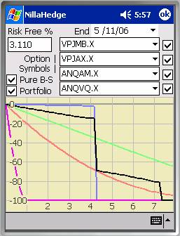
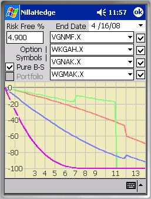
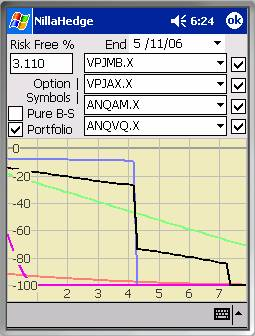
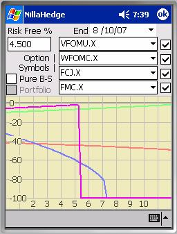

Time Decay Explorer

The Time Decay Explorer provides a graphical view of the relative rate with which option values decay as time passes. As can be seen in the plot at right, options exhibit a wide variety of decay behaviors, from near linear (VPJAX.X) or whipsaw (VPJMB.X) style gradual decay to a cliff-like drop (ANQAM.X) on the expiration date. The Time Decay Explorer uses the most accurate approach available for computing Black-Scholes value and consequently is by far the most computationnally intensive analysis in NillaHedge. That computational complexity derives from the need to compute the present value of each potential dividend from the plotted point in time to the present day. That may be as many as four dividends per year per issue in the portfolio, at each point in time depicted on the plot (which may span multiple years resulting in as many instances of each quarterly dividend).The walk away consideration
is that a multi-year plot of a portfolio containing many options drawn upon
stocks with multiple dividends may post a wait cursor for much longer than you
are accustomed to elsewhere in NillaHedge.
The good news is that given the computational investment in the portfolio
plot, its points are only computed once when the dialog is posted (if the
Portfolio button was checked the last time you used it) or upon checking the
portfolio box (if it wasn’t checked the last time you used it). Thus, subsequent changes in the selected
(red, green, blue, and purple) options will plot relatively quickly. As your options portfolio grows, you will
undoubtedly find it increasingly useful to disable the portfolio plot before
closing the dialog, so the next time that the Time Decay Explorer posts, the
decision to plot the portfolio will be yours.
The Plot
Time-decay plots depict time in months along the X‑axis and percent change in option value along the Y‑axis.
The colors assigned to option symbols are red, green, blue, and purple ordered from topmost symbol to bottom (e.g. VPJMB.X – red, VPJAX.X – green, etc.). When option positions exist in the database, the Portfolio checkbox will be enabled. If enabled and Portfolio is checked, a black line depicts the volatility-value curve for option positions in the portfolio with each option’s contribution weighted by the cost of the associated positions.
There is one point worth noting regarding time-decay plots. First, as you can see, time-decay curves can be discontinuous, i.e. exhibit sharp vertical drops, just as the portfolio and ANQAM.X each demonstrate in the screenshot above. The compromise between accuracy and responsiveness produces diagonal lines that would be perfectly vertical, given infinite computing capacity. The options and portfolio are not evaluated at every single visible point, but at discrete intervals across the X‑axis. One pixel of horizontal displacement is unavoidable, so a curve that would appear as a nearly perfect vertical drop if all the points were plotted will appear to have a very sharp slope instead. Such approximations to the vertical impute no information whatsoever about the value of the issue or portfolio at intervening X‑values; the Y‑values at the rightmost point of the segment on top of the cliff and at the leftmost point of the segment below the cliff are accurate, but in between nothing whatsoever has been computed, the curve is merely an instrument of visual continuity. You’ll note that more than one pixel of deviation is evidenced in the plots on this page. The default resolution it to evaluate the selected options and the options portfolio (if it is enabled) at sixty points in time, or about once every six days for a plot spanning one year. On a QVGA (240x320 pixel) screen, that’s one evaluation for every four horizontal pixels, resulting in three unknown points between the discontinuous ‘horizontal’

segments.Going Ex-Dividend
The plot at right is the only one in this section where
dividends were entered in the Stock Definitions. This plot was drawn on
Plot Enabling Checkboxes
The checkboxes on the right side of the dialog enable/disable plotting the time-decay of the option symbol immediately at its left.
Portfolio
The Portfolio check box enables you to see how your entire option portfolio responds to the passage of time. The Time Decay Explorer plots a polyline which sums all option positions in your portfolio using each option’s cost-weighted contribution to the portfolio. The portfolio decay profile shown at right (in black) consists of two option positions with different expiration dates. Neither option’s symbol is currently selected in any of the option symbol combo-boxes, though one option shares an expiration date with ANQAM.X (blue).

Pure Black-Scholes modeY‑values on the plot represent percentages of the option’s reference value, given by , where bsv represents the Black-Scholes value at a given point in time and rv is a reference value which can be either the Black-Scholes value on the current date or the option’s currently stored market price, based on the state of the Pure B-S checkbox. When Pure B-S is checked, rv is the option’s reference value; when it’s unchecked, the stored market price is used for rv.
The first screenshot (previous page) shows a Pure B-S mode plot. You’ll note that all options start at time zero with a 0% displacement from the reference value and ultimately finish at -100% of the reference value.
In market price mode (Pure B-S is unchecked) the ‘curves’
may start above or below 0% but they’ll all finish at ‑100% since  as
as  . Options whose
currently stored market price exceeds the current Black-Scholes
value will start off showing a ‘loss’ (below 0%); options whose initial Black-Scholes value exceeds the currently stored market price
will start off with a ‘profit’ (above 0%).
Either way, the option or portfolio will decay in value from that
initial point. All options for a given
underlying stock are evaluated using the stock’s currently stored price,
volatility, and dividends. Since option
value increases with volatility, if the stored volatility is close to the
implied volatilities for the near-the-money options, the far-from-the-money
options will appear undervalued (therefore starting off with a ‘loss’ as
VPJMB.X does here) and vice-versa. If
the stock pays dividends and you have not entered any in the stock definition,
the market will undoubtedly have a different opinion about option value than
you will compute in their absence.
. Options whose
currently stored market price exceeds the current Black-Scholes
value will start off showing a ‘loss’ (below 0%); options whose initial Black-Scholes value exceeds the currently stored market price
will start off with a ‘profit’ (above 0%).
Either way, the option or portfolio will decay in value from that
initial point. All options for a given
underlying stock are evaluated using the stock’s currently stored price,
volatility, and dividends. Since option
value increases with volatility, if the stored volatility is close to the
implied volatilities for the near-the-money options, the far-from-the-money
options will appear undervalued (therefore starting off with a ‘loss’ as
VPJMB.X does here) and vice-versa. If
the stock pays dividends and you have not entered any in the stock definition,
the market will undoubtedly have a different opinion about option value than
you will compute in their absence.
In the example at right, note that the green (WFOMC.X) and purple (FMC.X) options actually increase in value over time when viewed in market price mode (Pure-BS unchecked). This could be something to get excited about because it means the current market price is below what an efficient market would normally assess, i.e. there’s unrealized value within. However, in this case, the results were due to accepting the default values for dividends (0.00) and volatility (0.3), when in fact the defaults will frequently need refinement, i.e. garbage in will invariably produce garbage out. If you run into a situation like WFOMC.X or FMC.X after you’ve verified that the underlying stock’s market price and dividends are correct and enabled in the Stock Definition, and your opinion on volatility is right where you want it to be, then a little excitement may be warranted.

End DateThe End Date picker defaults to twelve months from the current date, but can be set earlier or later to zoom the X-axis in or out, respectively. A ‘practical’ range of two months to four years from the current date is enforced.
Risk Free Rate
The Risk Free Rate edit box displays the currently stored value for the risk free rate. It’s expressed as a percentage with a default value of 3%.
Volatility Premiums
Options obviously decay in value over time - some gradually, others abruptly. It therefore behooves you to be aware of how your options portfolio behaves so you won’t be caught unaware when a precipitous change in value is imminent. Secondarily, switching between Pure B-S and market price mode can shed light on disparities between theoretical and market value. In the plot above, VPJMB.X appears to have a market price with a significant premium over its theoretical value. Similarly, VFOMU.X benefits from a large premium in the plot at right. How can market and theoretical values be so far off? Of course, the market could be temporarily out of sync or the contract writer might have unrealistic expectations, but (barring parameter error) more often than not you are witnessing the effect of the volatility smile.
Options with strikes distant from the current market price of the underlying stock (struck far from the money) have implied volatilities greater than those struck close to the market value. When you look at implied volatility vs. strike price, you generally find a convex curve with its low point near the stock’s market price. The actual stock volatility is generally found at the low point. The portion of implied volatility beyond the stock’s actual volatility is a reflection of increasingly bearish/bullish investor expectations, i.e. very bullish/bearish option investors believe that the stock’s volatility is inherently higher in order to rationalize their market view. If you don’t share their more dynamic view of the underlying stock’s volatility, you are bound to run into option valuation disparities when analyzing options struck far from the money.
The VPJMB.X case will be discussed in more detail in the Volatility Value Explorer section on Volatility Risk, so we’ll forego a detailed rationalization here. For now, it should be apparent that significant departures from a conservative implied volatility (computed near the current spot price on options with near term expiration dates) can have a dramatic (non-linear) influence on option value. Half of VPJMB.X’s implied volatility in the example above is premium over a near term spot price assessment. The Volatility Value Explorer finds that volatility premium on AMAT effects a 15x change in VPJMB.X’s theoretical value.